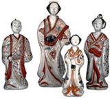

| |
Brief
Chronology
| 1753 |
The founding
collections include objects collected by Engelbert Kaempfer in Japan
between 1690 and 1692, which were then acquired by Sir Hans Sloane |
| 1860 |
The BM begins
actively collecting Japanese prints and ceramics (Sir Arthur Wollaston
Franks) |
| 1881 |
The BM begins
actively collecting Japanese paintings (William Anderson Collection) |
| 1913 |
Establishment
of sub-Department of Oriental Prints and Drawings |
| 1933 |
Establishment
of the Department of Oriental Antiqities |
| 1987 |
Establishment
of Department of Japanese Antiquities |
| 1990 |
Opening of
the Japanese Galleries and beginning of Japanese Exhibition Programme |
The
Japanese Galleries
Seven hundred and fifty square metres of air-conditioned galleries
were opened in 1990, with specially designed display cases. In addition,
a secure storage area for paintings, prints, lacquer and small organic
sculpture is kept at an environment of 55% RH and 19 degrees C following
best practice in Japan. The conditions of display, including humidity,
temperature and low lighting levels, meet those required by the Agency
for Cultural Affairs, Tokyo, for loan of National Treasures. £5.5m was
raised by committees in Japan and UK with the assistance of Boekikai
(Japan Foreign Trade Council) and major donors include the Asahi Shimbun,
the Konica Corporation, the Urasenke Foundation, and Brian and Esther
Pilkington. The entire project was strongly supported by the Government
of Japan, The Japan Foundation and The British Embassy in Tokyo, and
the Galleries were inaugurated by HIH Prince Fumihito on 6 April 1990.
Exhibition
History
Since 1990 a total of over 40 Japanese exhibitions have been mounted,
sixteen of which included loan material from Japan. These have been,
and will continue to be, the main focus for the display of traditional
Japanese arts in the United Kingdom. Five of the major loans were organised
in conjunction with Asahi Shimbun and several with the Agency for Cultural
Affairs, Tokyo, and The Japan Foundation. Much of the cost of this programme
has been met by Japanese co-organisers. Highlights include:
1990 Porcelain for
Palaces
1991 Swords
of the Samurai
1991 Kamakura:
The Renaissance of Japanese Sculpture, 1185-
1333 (Japan Festival
1991)
1992 Nihonga: Traditional Japanese Painting, 1900-1940 (Japan Festival
1991)
1993 Demon of Painting: The Art of Kawanabe Kyosai, 1831-89
1994 Treasured
Miniatures: Contemporary Netsuke
1995 The Passionate Art of Kitagawa Utamaro (d.1806)
1996 Kayama Matazo: New Triumphs for Old Traditions
1998 Rimpa Art from the Idemitsu Collection, Tokyo
2000 Saga: Contemporary Ceramics from the Home of Japanese Porcelain
2001 100 Views of Mount Fuji (Japan 2001)
2001 Shinto: The Sacred Art of Ancient Japan (Japan 2001)
2 of 3
1 - 2 - 3
|
|

Four
Imari ware porcelain figures, from Japan Edo period, late 17th-19th
century AD
|
|
|
|